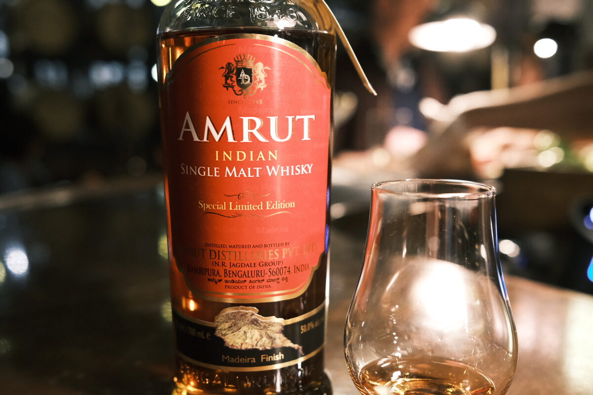

Amrut "Madeira Finish" 50% (Madeira finish)
Can Madiera redeem itself after that shocker Bruichladdich? Spoiler: yes. Batch 1, bottled 2018.
Colour Ruby.
Nose Malty. Fennel, lemon and apple juice. Dried fruits, a drop of soy sauce. With water, stewed apples and pears. Jam. Cloves?
Palate Dried fruits and malt. Hints of rosemary and mint. A kind of artificial fruit flavour. Herbal. Bananas? Oily texture. With water, bright, lemon and sugar, more herbal malt.
Finish Dried fruits and malt (again). Brown sugar and chocolate chip cookies. Long, warming. With water, herbaceous. Cinnamon sticks.
Comments Nice herbaceous notes with the standard dried fruit thing. Lovely. 84/100.

Posted by Dominic on 15 Jun 2021